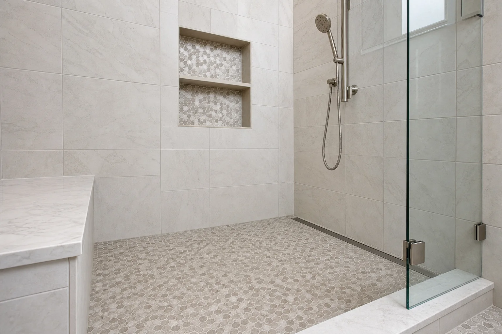

Walk-In Shower Installation
A successful walk-in shower is built as a complete water-management system. The base, drain, waterproofing, wall transitions, glass, and ventilation need to work together.
- Footprint and drain review
- Base and waterproofing
- Controls and spray